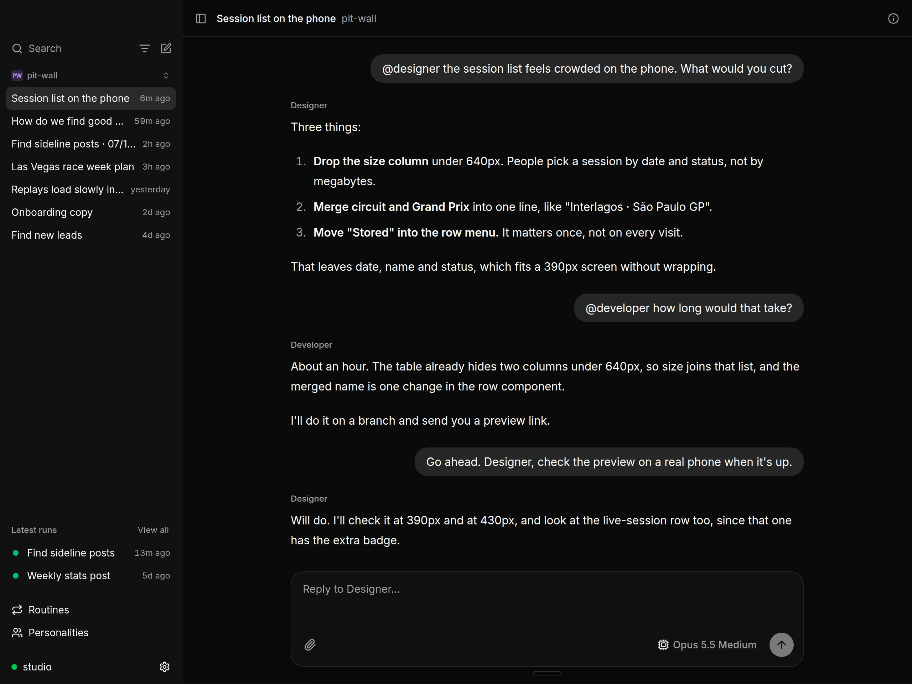
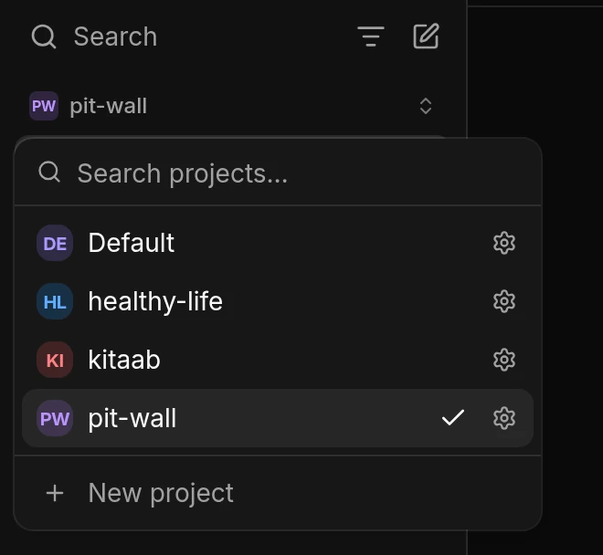
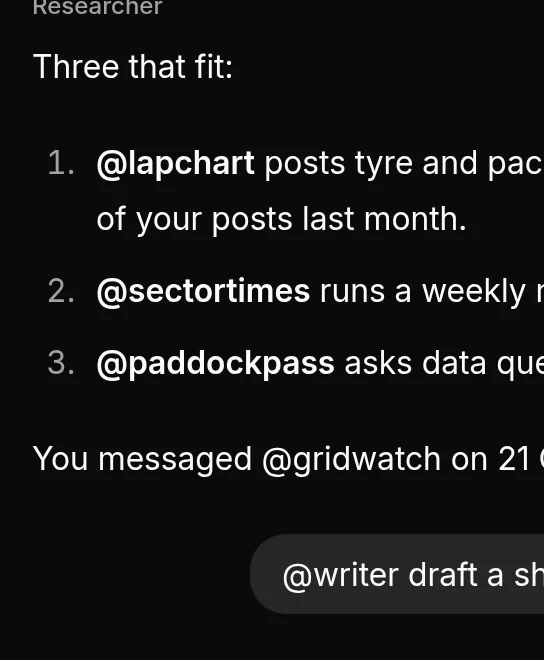
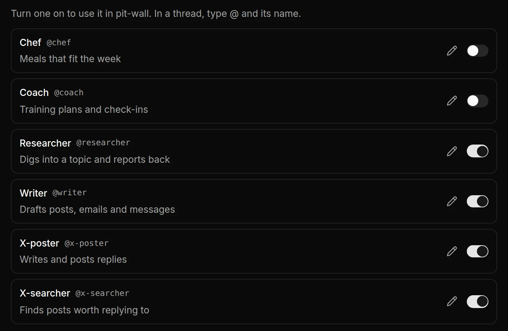
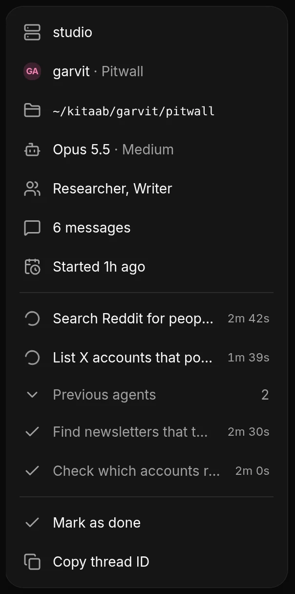
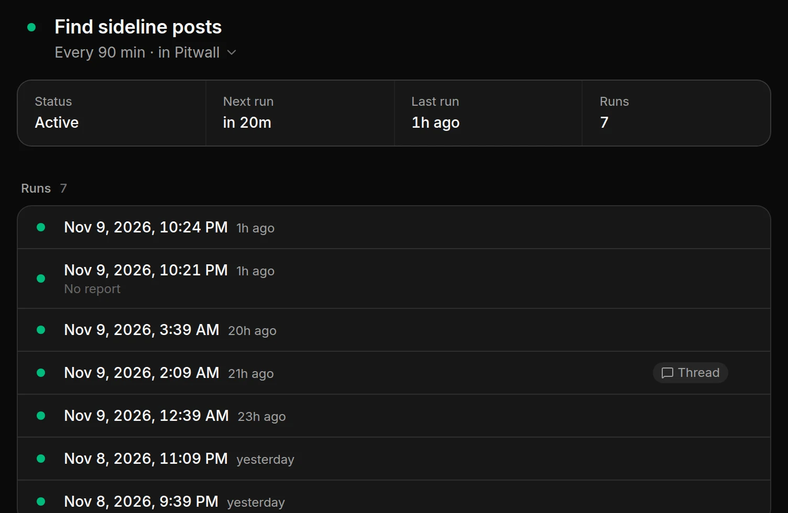
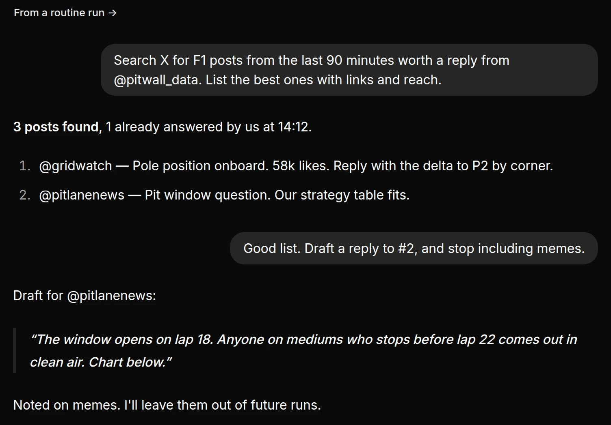

An organizer for Hermes.
Made for entrepreneurs and solopreneurs to manage side projects, outreach, research, ideas and routines.
Apple silicon · v0.1.1 · Free and open source
The iPhone app isn’t on the App Store yet. You build it from the code.

What it’s for.
I use it to grow Pitwall, an X account about Formula 1, and to look after my health.
Outreach
Keep track of who you contacted, where, and what they said. Ask Hermes who still needs a follow-up.
Ideas
Drop ideas into a project as they come. Hermes remembers them, so months later you can pick one up where you left it.
Research
Ask Hermes to look into something and it reads the web for you. Each thread adds to what the project knows.
Alerts
Have Hermes watch X, a website or an inbox on a schedule, and hear from it only when something matters.
Personal goals
Log sleep, workouts or meals in a thread. Get a check-in every week on how it’s going.
Quick scripts
A scraper, a data export or a tool for one job. Hermes writes it and runs it for you.
Make a project for each thing you work on.
Think of a project as a folder for one part of your work, like growing an X account, getting fit, or planning a trip. Everything about it goes inside, including your conversations, your files and what Hermes remembers. None of it mixes with your other projects.
HowPress ⌘N and pick a project for the thread, or choose New project.

Every conversation is a thread inside a project.
A thread is one conversation about one thing, like drafting replies to a big account or comparing two sleep trackers. Each thread belongs to a project. You can have many threads open in a project and switch between them. Every thread knows what its project knows, so you never start from zero.
HowPress ⌘N to start a thread.

Work with a team of agents, each with its own role.
A personality is an agent with a role, like Researcher, Writer or Coach. You write each one once, with its name, its job and how it should work. Then you add it to the projects where you need it. The agent knows how to do its job, and the project tells it about your work. So the same Researcher can work on all your projects.
HowIn a thread, type @ and the agent's name, and it answers. You can bring several agents into one thread, and each reply shows who wrote it.

Send agents off to work while you keep talking.
For a bigger job, Hermes hands parts of it to helper agents that run in the background, like one searching Reddit while another lists accounts on X. The thread shows which agents are still working and how long each has taken, and you can stop any of them.
HowClick the info button at the top right of a thread. A number on it shows how many agents are working.

Let Hermes do a task on a schedule.
A routine is a task Hermes does again and again, like searching X every 90 minutes for posts worth a reply, or asking how you slept each morning. You don't need to be there. After each run, Hermes writes a short report. Reply to the report and it turns into a thread, so you can ask follow-up questions.
HowAsk for one in a thread, for example “Every morning at 8, ask me how I slept and add it to my log.” Hermes sets it up, and it shows under Routines.


It connects to your own Hermes.
Kitaab connects over SSH to the computer where Hermes runs. You don't make an account, and no other server sits in between. Your Mac and your iPhone connect to the same Hermes, so you see the same threads on both.
- Your SSH key is the only login.
- Kitaab never installs or updates Hermes.
- You can also connect to a Hermes dashboard URL.
hermes serve --isolated
Kitaab starts this. Only your SSH connection can reach it.
All the code is on GitHub.
$ curl -fsSL https://raw.githubusercontent.com/plusminushalf/kitaab/main/install.sh | bash ==> Downloading the signed checksums ==> Checking the release signature ==> Downloading Kitaab-0.1.9-arm64.dmg ==> Verified: sha256 e02ff326…46bae88b ==> Installing to /Applications/Kitaab.app ==> Kitaab is installed. Opening it. $
- Read the code. The Mac app, the iPhone app and the installer are all there, under the MIT license.
- The installer checks the download. Before it installs anything, it checks the release signature and the file's SHA-256.
- Apple hasn't notarized the app yet. If you download the DMG in a browser, macOS blocks it the first time. Allow it once in System Settings, under Privacy & Security.
Download Kitaab for Mac.
You need a Mac with Apple silicon and a computer that runs Hermes.